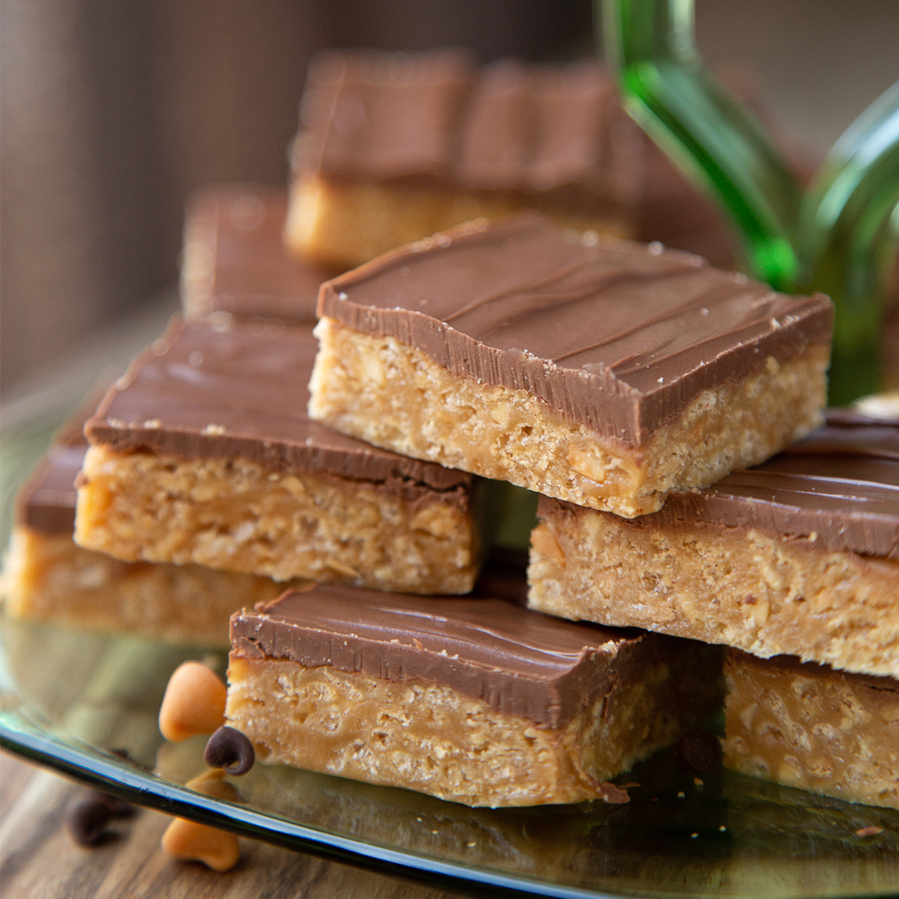

Special K Bars Recipe

Description
This is the best recipe for an easy dessert - my grandmother's are always a hit.
Ingredients
- 6 oz. chocolate chips
- 6 oz. butterscotch chips
- 1 c peanut butter
- 1 c white sugar
- 1 c light corn syrup
- 5 c Special K cereal, crushed (can use gluten-free)
Steps
- In a large pot over medium heat, combine the corn syrup and the sugar until small bubbles form around the edge of the pan. Do NOT boil.
- Once bubbles form, remove from heat and add peanut butter - mix thoroughly.
- After mixture is homogenous, add in crushed cereal and continue mixing.
- Spread cereal mixture into a 9x13 pan and allow to cool.
- Meanwhile, use a double boiler to melt chocolate chips and butterscotch chips together.
- Pour chocolate mixture over cearl/peanut butter mixture.
- Refrigerate 1-2 hours before serving.
Go Back